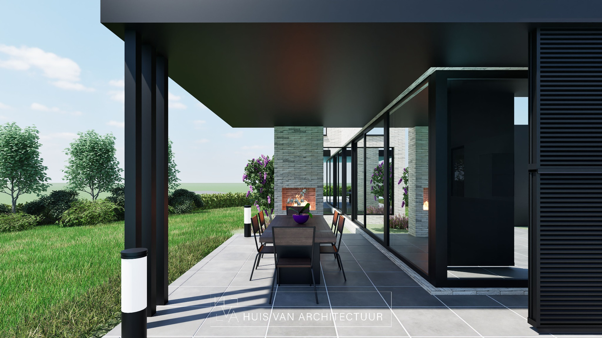
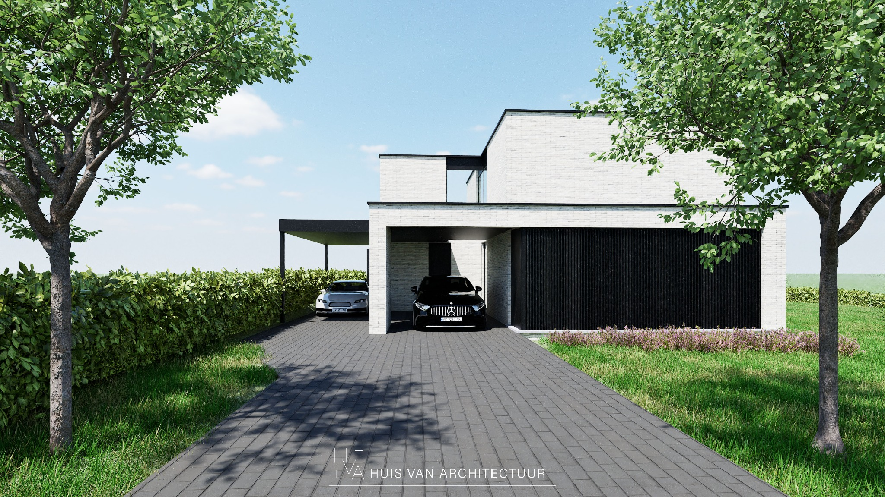
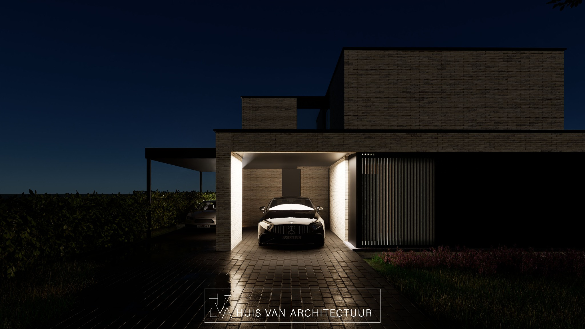

Projecten
Een selectie van recente realisaties en concepten, telkens met oog voor context, duurzaamheid en detail.

Woning aan de bosrand
Een ingetogen, duurzame woning met natuurlijke materialen en zicht op het landschap.

Stadswoning met lichtpatio
Compact maar ruimtelijk ontwerp voor een jong gezin in het centrum van Antwerpen.

Villa met zichtlijnen
Strakke geometrie en uitgepuurde details in dialoog met de open omgeving.